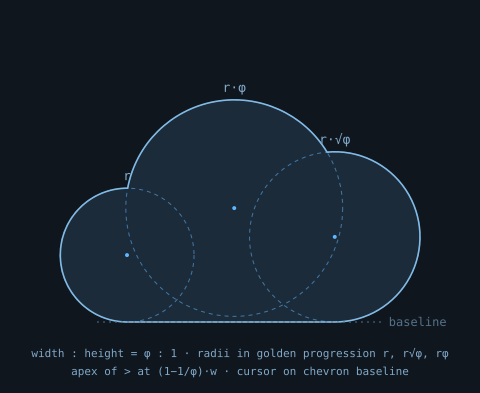

overcast
the idea
Overcast is the AWS cloud, brought down to your machine. The mark says exactly that:
a cloud grounded on a flat baseline — landed, not floating — with a
shell prompt >_ inside it.
The cloud you normally reach over the internet, running in your terminal. The domain is
overcast.sh; the prompt is the brand.
construction

The silhouette is the union of three circles whose radii follow a golden progression — r, r·√φ, r·φ — resting on a shared baseline. The overall bounding box is φ:1 (width:height).
The chevron's apex sits at the golden division of the cloud's width, x = (1−1/φ)·w ≈ 0.382w. The cursor bar sits on the chevron's lower shoulder line, ending near 0.75w.
Every size is generated from this same geometry — never scale one SVG down; use the size-specific files, which reduce stroke detail and snap to the pixel grid.
the mark
Clearspace: keep a margin equal to the chevron's height (≈ 0.4 × cloud height) free on all sides. Minimum size: 24px for the bare mark, 16px for the tiled icon.
lockup
The wordmark is always lowercase overcast, set bold in the brand mono. The tagline is optional below 160px width — drop it rather than shrink it.
icons
The dark navy tile ships with every icon so it works on any surface. Use
favicon/favicon.svg directly — modern browsers
accept SVG favicons; rasterize to .ico only for legacy support.
color
The accent always switches with the surface: Signal light on light grounds, Signal dark on dark grounds. Never use the dark-surface accent on white — it fails contrast.
typography
| Role | Face | Notes |
|---|---|---|
| Wordmark & headings | JetBrains Mono / Cascadia Code (bold) | lowercase wordmark, tight tracking (−0.02em) |
| Labels & taglines | same mono, regular | uppercase, wide tracking (+0.15em) |
| Body / docs | system-ui stack | the mono is flavor; body text stays quiet |
SVG lockups currently use the system mono stack
(ui-monospace → Cascadia → Menlo → Consolas).
Before print or pixel-perfect web use, set the wordmark in the chosen webfont and outline it.
usage
third-party marks
Overcast names AWS and its services only to state compatibility, and only in plain text. That is the line AWS draws itself: nominative use "should be in plain text only (no logos)" (AWS Trademark Guidelines §13), and imitating AWS trade dress, including its "product icons", is prohibited (§10). The AWS Architecture Icons ship with no licence and are offered for diagrams, not product UIs.
files
| Path | Use |
|---|---|
logo/overcast-logo-{light,dark}.svg | README, website header, docs |
mark/mark-{light,dark}.svg | square contexts on known surfaces |
mark/mark-mono-{white,ink}.svg | single-color uses |
icons/icon-{16,32,48,96,256}.svg | favicons, app icons, GitHub org avatar (rasterize 256) |
favicon/favicon.svg | drop-in <link rel="icon"> |
loading/overcast-loader.svg | loading states (blinking cursor) |
social/github-social-card.svg | rasterize to 1280×640 PNG for GitHub/OG |
brand/construction.svg | this page; geometry reference |
All assets are generated from
gen.ts — a parametric build where the cloud,
prompt, palette, and every per-size variant derive from one geometric definition. To adjust
the brand, change the parameters and regenerate; don't hand-edit the SVGs.